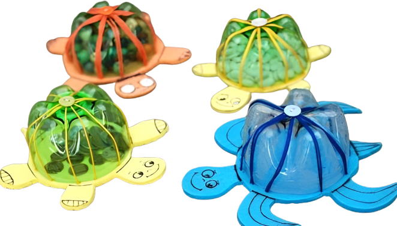
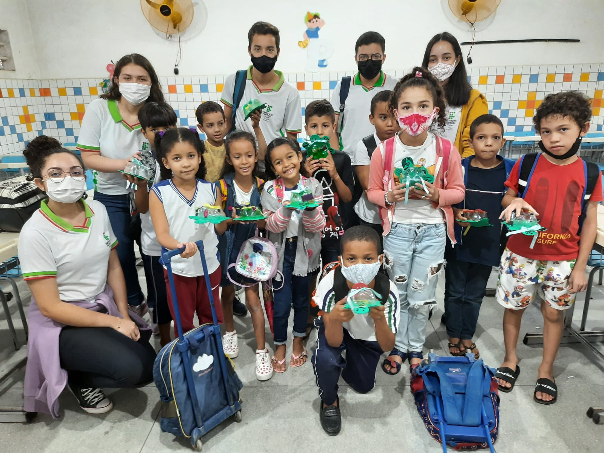
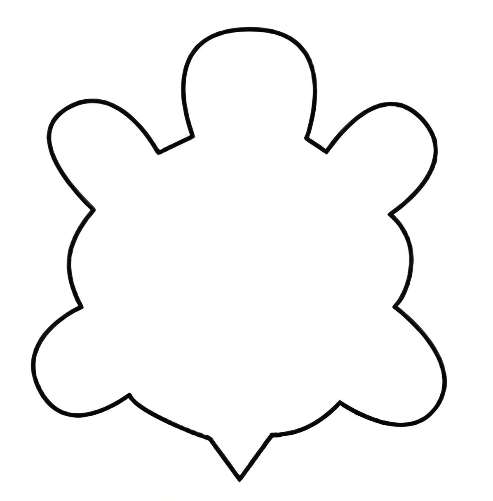
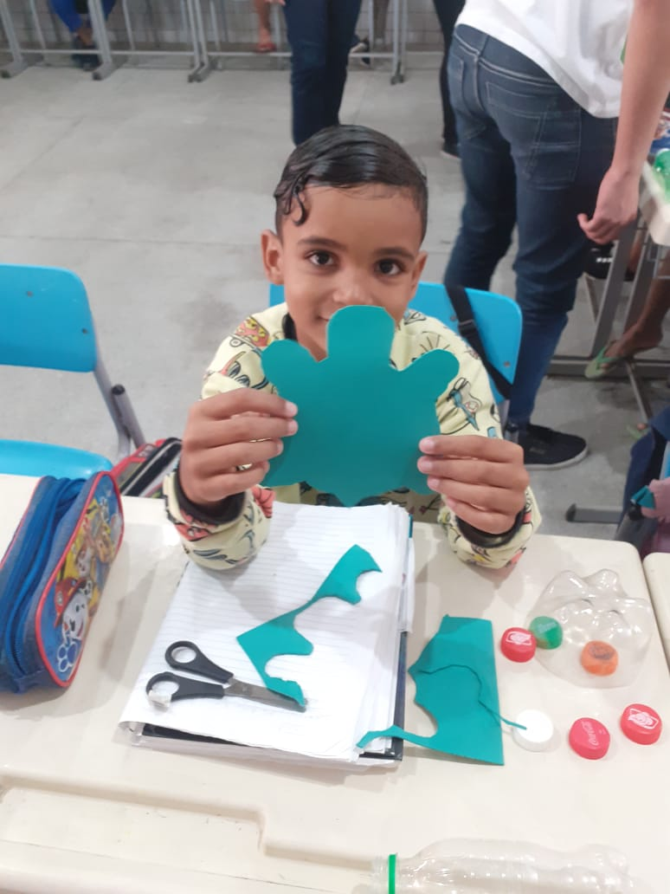
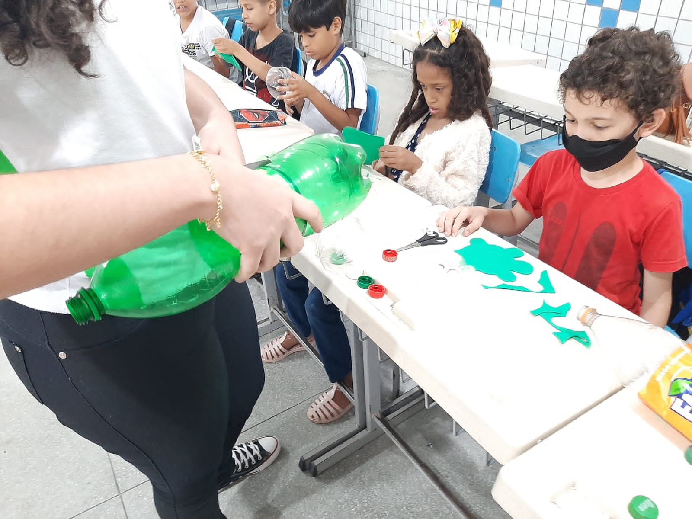
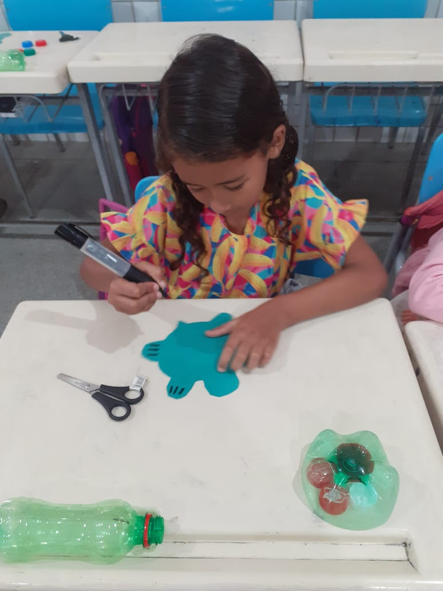
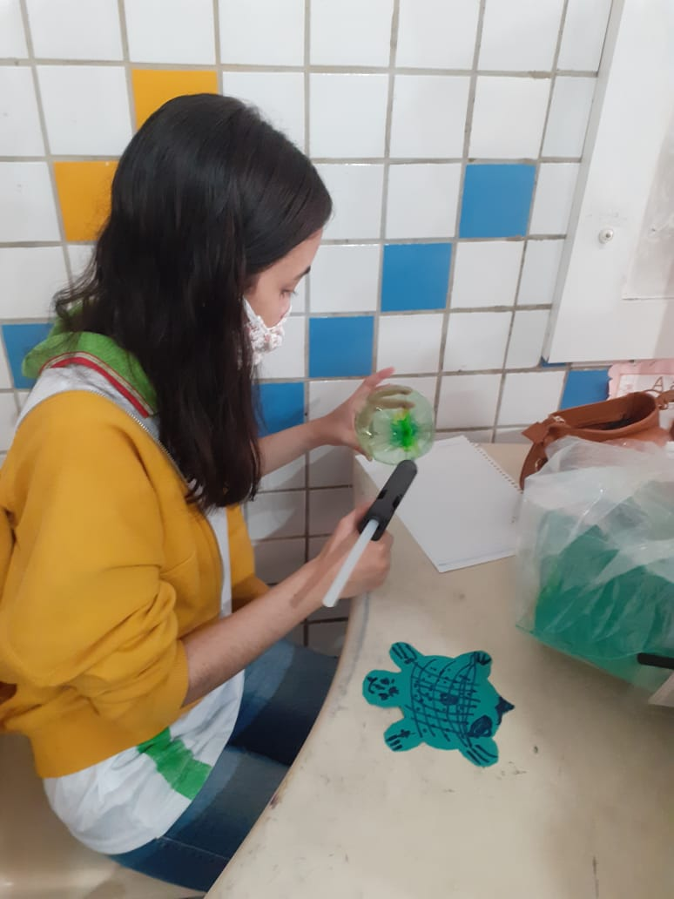
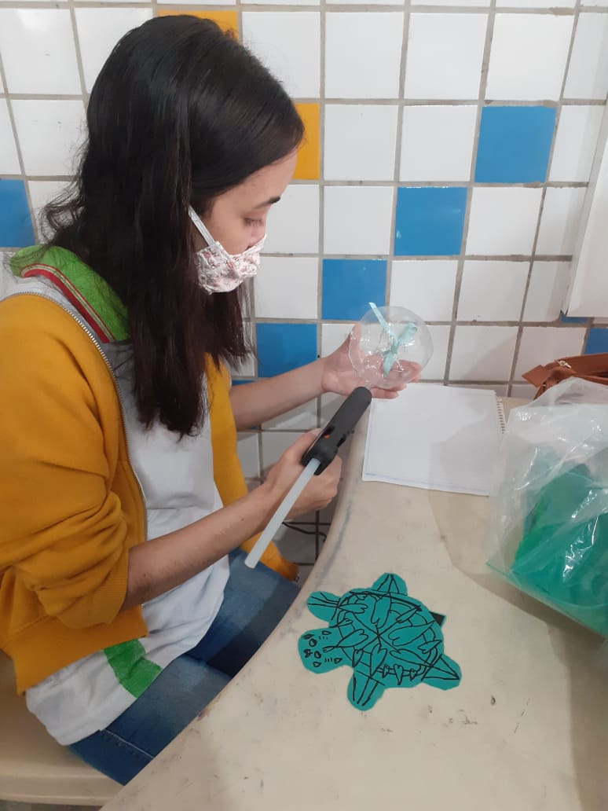
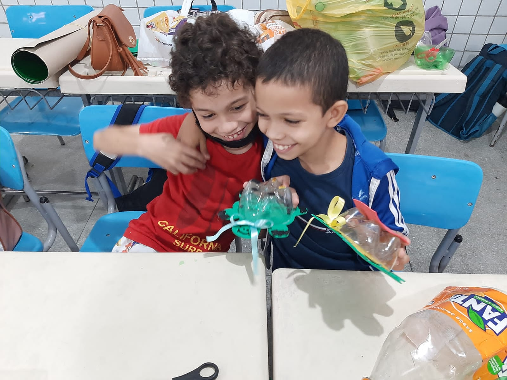

Tartaruga com garrafa pet

Vídeo tutorial de como fazer a Tartaruga com garrafa pet:
Direitos autorais: Aprendendo e brincando

Materiais:
- Garrafa pet de 2 litros;
- Emborrachado verde;
- Caneta permanente (preto de preferência);
- Pistola de cola quente;
- Tesoura sem ponta;
- Lápis;
- Fita de cetim (opcional).
Como fazer?
- Com o lápis faça um molde do corpo da tartaruga no emborrachado e recorte com a tesoura;


- Corte com a tesoura a parte de baixo da garrafa onde está marcado com uma linha;

- Desenhe com a caneta permanente o rosto e as patinhas da tartaruga;

- Com a cola quente, cole a parte recortada da garrafa PET no corpo de EVA da tartaruga;

- Faça um laço com a fita colorida e decore a tartaruga (opcional).

- E está pronto! Agora é só deixar a criançada se divertir!
